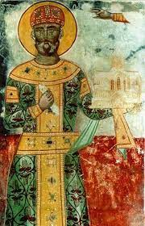
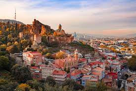
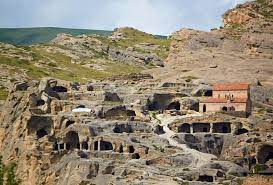

The territory of modern-day Georgia was inhabited by Homo erectus since the Paleolithic Era.
The proto-Georgian tribes first appear in written history in the 12th century BC. The earliest evidence
of wine to date has been found in Georgia, where 8,000-year old wine jars were uncovered. Archaeological
finds and references in ancient sources also reveal elements of early political and state formations characterized
by advanced metallurgy and goldsmith techniques that date back to the 7th century BC and beyond. In fact, early
metallurgy started in Georgia during the 6th millennium BC, associated with the Shulaveri-Shomu culture.
Welcome to Sakartvelo!
Sakartvelo, also known as Georgia, is a country located in the Caucasus region of Eurasia. It is known for its rich history, diverse culture, and beautiful landscapes.
Georgia: საქართველო, romanized: sakartvelo, is a transcontinental country at the intersection of Eastern Europe and Western Asia. It is part of the Caucasus region, bounded by the Black Sea to the west, Russia to the north and northeast, Turkey to the southwest, Armenia to the south, and by Azerbaijan to the southeast. The country covers an area of 69,700 square kilometres (26,900 sq mi), and has a population of 3.7 million people. Tbilisi is its capital and largest city, home to roughly a third of the Georgian population.
History

Places to Visit
Sakartvelo offers a wide range of attractions for visitors. Some popular places to visit include Tbilisi, the capital city, the ancient cave city of Uplistsikhe, thestunning mountain region of Svaneti and many, many more.
 
Population of Georgia by Administrative Divisions
- Tbilisi - 1,110,000
- Kvemo Kartli - 511,200
- Ajara - 393,700
- Imereti - 463,800
- Kakheti - 408,200
- Samegrelo-Zemo Svaneti - 376,400
- Shida Kartli - 324,600
- Mtskheta-Mtianeti - 94,800
- Guria - 111,700
- Samtskhe-Javakheti - 160,900
- Racha-Lechkhumi and Kvemo Svaneti - 31,500